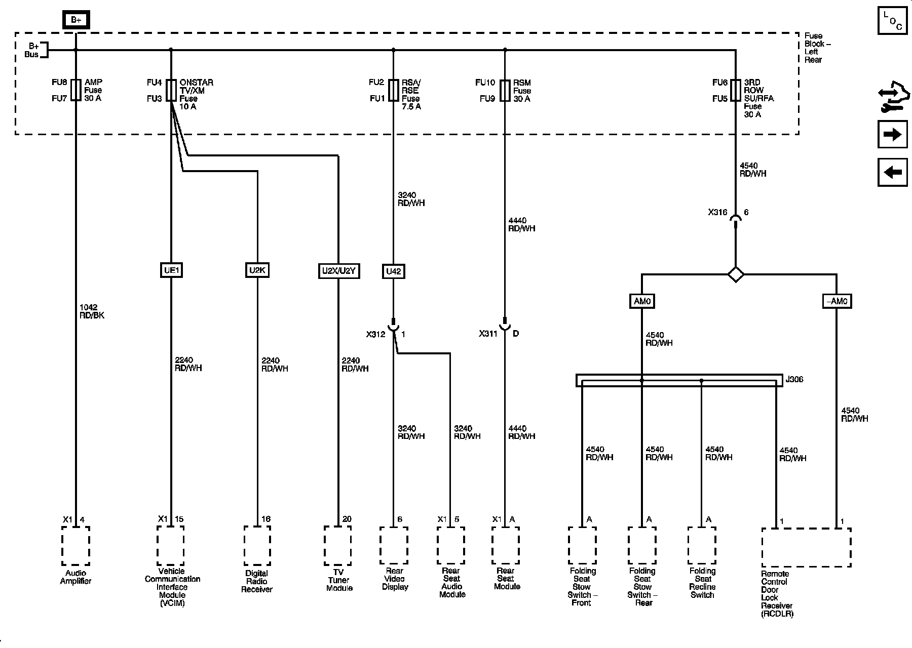

Operation CHARM
: Car repair manuals for everyone.
Home
>>
Cadillac
>>
2008
>>
SRX AWD V8-4.6L
>>
Repair and Diagnosis
>>
Power and Ground Distribution
>>
Diagrams
>>
Electrical Diagrams
>>
Power Distribution Diagrams
>>
Power Distribution Diagram 13
Power Distribution Diagram 13
Power Distribution Schematics
3RD ROW SU/RFA Fuse, AMP Fuse, ONSTAR TV/XM Fuse, RSA/RSE Fuse, and RSM Fuse
